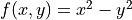

Contour Plots¶
Overview¶
GSL shell offers a contour plot function to draw contour curves of bidimensional functions. The current algorithm works correctly only for continuous functions and it may give bad results if the function has discontinuities.
Here is an example of its utilization to plot the function :
contour.plot(|x,y| x^2 - y^2, -8, -8, 8, 8)

- contour.plot(f, xmin, ymin, xmax, ymax[, options])¶
Plot a contour plot of the function
fin the rectangle delimited by (xmin, ymin), (xmax, ymax) and return the plot itself.The
optionsargument is an optional table that can contain the following fields:gridx, number of subdivision along xgridy, number of subdivision along ylevels, number of contour levels or a list of the level values in monotonic order.colormapa function that returns a color for the contour region. The argument of the function will be a number between 0 and 1.show, specify if the plot should be shown. By default it istrue.
- contour.polar_plot(f, R[, options]])¶
Plot a contour plot of the function
f(x, y)over the circular domain of radiusRand centered at the origin. Theoptionstable accepts the same fields as the functioncontour().Example:
use 'math' p = contour.polar_plot(|x,y| cos(x)+cos(y)+0.1*x+0.3*y, 8) p.title = 'cos(x) + cos(y) + 0.1*x + 0.3*y'